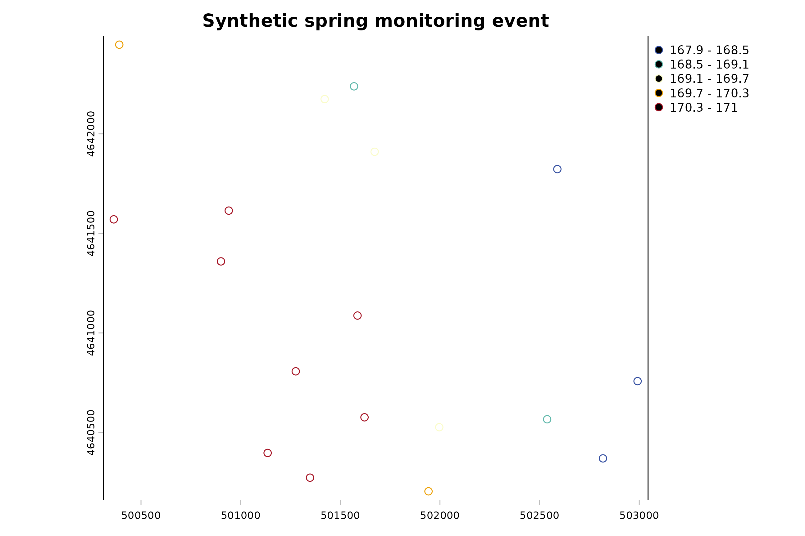
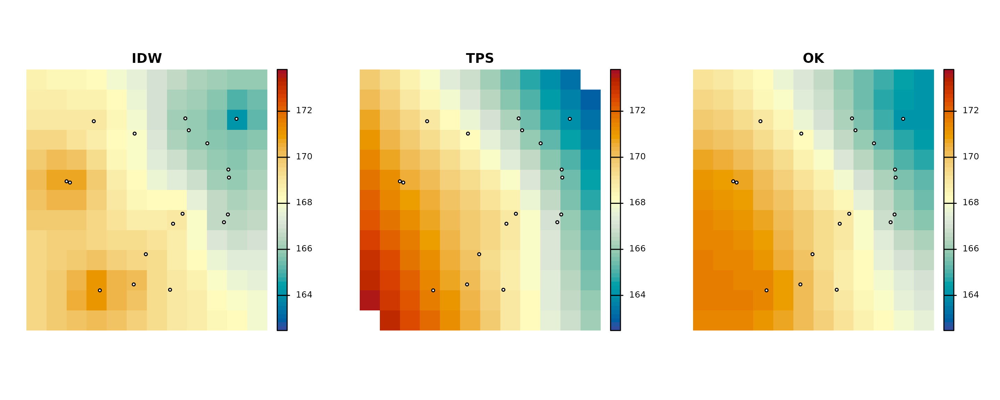
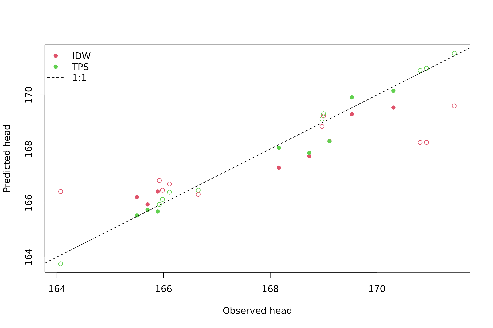
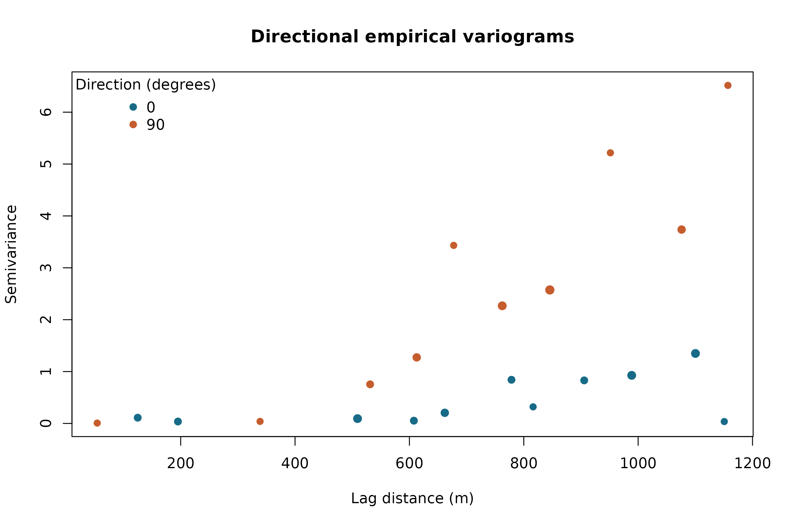
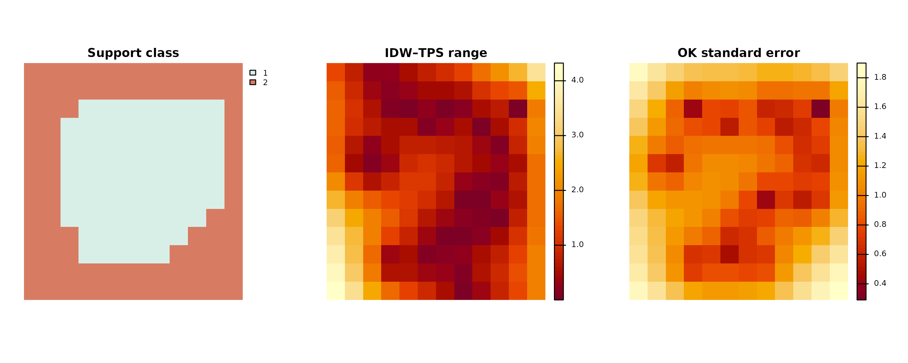
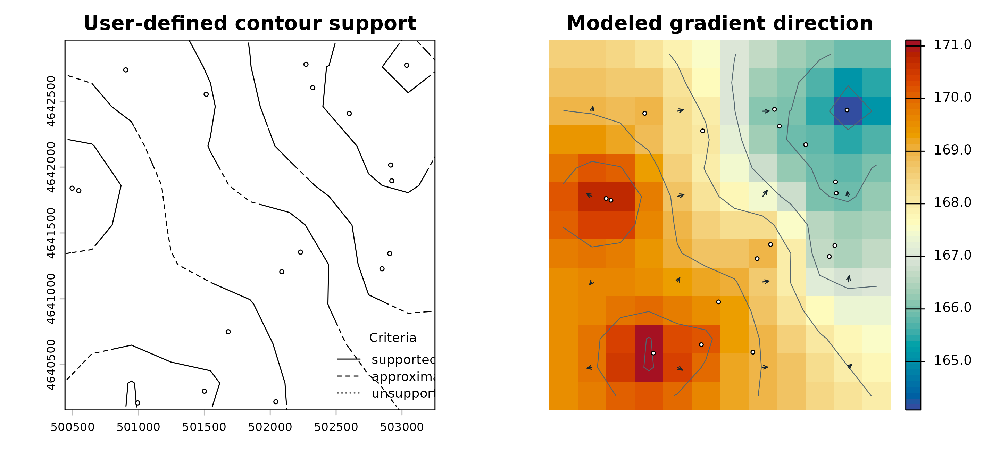
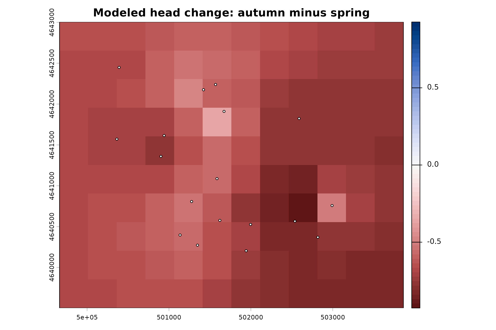
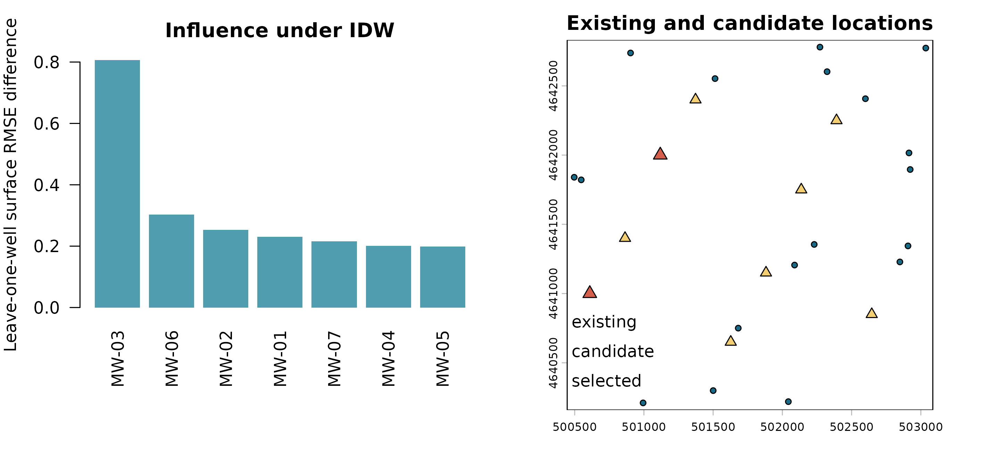
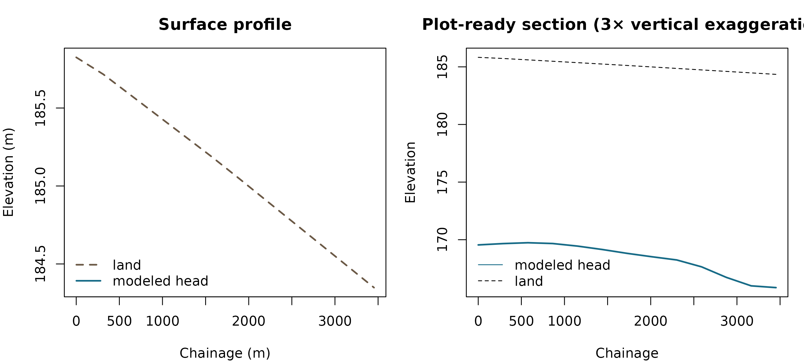

Complete synthetic aquifer example
complete-synthetic-aquifer.RmdThis article is a reproducible tour of the 0.2.0 analysis objects. Every input comes from the installed package, every stochastic operation uses an explicit seed, and export examples write only to a temporary directory. The example is deliberately broad: a real project should run only analyses that answer its defined hydrogeologic and monitoring questions.
This is a synthetic demonstration, not a site conceptual model. Interpolation does not create hydrogeologic knowledge outside the observations, and potentiomap is not a groundwater-flow or contaminant-transport simulator.
1. Define the analysis and load installed fixtures
We use a projected CRS whose horizontal coordinates are metres and retain the fixture’s head units as metres. The two monitoring events use the same vertical datum and water-bearing-unit label. Those compatibilities must be verified, not assumed, for field data.
data("synthetic_events", package = "potentiomap")
data("synthetic_wells", package = "potentiomap")
data("synthetic_nested_wells", package = "potentiomap")
data("synthetic_regions", package = "potentiomap")
data("synthetic_candidate_sites", package = "potentiomap")
data("synthetic_anisotropic_points", package = "potentiomap")
data("synthetic_transect", package = "potentiomap")
spring <- subset(synthetic_events, event == "spring")
autumn <- subset(synthetic_events, event == "autumn")
attr(spring, "crs") <- "EPSG:26916"
data.frame(
fixture = c("spring event", "autumn event", "survey wells", "nested intervals"),
records = c(nrow(spring), nrow(autumn), nrow(synthetic_wells),
nrow(synthetic_nested_wells))
)
#> fixture records
#> 1 spring event 18
#> 2 autumn event 18
#> 3 survey wells 32
#> 4 nested intervals 16
spring_points <- ps_make_points(
spring, "x", "y", "head", "well_id", "EPSG:26916"
)
plot(spring_points, "Z", col = head_cols, pch = 21, cex = 1.1,
main = "Synthetic spring monitoring event")
2. Check observations before fitting a surface
ps_check_observations() reports issues without quietly
redefining the input. The check covers numeric coordinates and heads,
identifiers, dates, units, and vertical-datum fields. A clean synthetic
result is not evidence that field data would pass the same review.
qa <- ps_check_observations(
spring,
x = "x", y = "y", value = "head", id = "well_id",
datetime = "datetime", unit = "unit", vertical_datum = "vertical_datum"
)
qa$summary
#> original_count retained_count removed_count issue_count error_count
#> 1 18 18 0 0 0
#> warning_count review_count
#> 1 0 0
qa$issues
#> [1] issue_id record_id issue_code severity
#> [5] field message suggested_review
#> <0 rows> (or 0-length row.names)Proceed only after resolving errors and documenting accepted review findings. Unit conversion, datum reconciliation, casing-reference corrections, and screen-interval interpretation belong upstream of interpolation.
3. Select a coherent monitoring event
The event selector records the target time, window, actual selected span, ties, and excluded wells. Here the requested three-hour window around noon captures one reading per well.
event <- ps_select_event(
spring,
id = "well_id", datetime = "datetime",
center = as.POSIXct("2025-03-15 12:00", tz = "UTC"),
window = 3 * 60 * 60,
rule = "nearest"
)
event$summary
#> target_time window_start window_end
#> 1 2025-03-15 12:00:00 UTC 2025-03-15 09:00:00 UTC 2025-03-15 15:00:00 UTC
#> selected_minimum_time selected_maximum_time actual_span_seconds
#> 1 2025-03-15 10:00:00 UTC 2025-03-15 14:00:00 UTC 14400
#> well_count tie_count excluded_count
#> 1 18 0 0
head(event$selected[, c("well_id", "datetime", "head", "quality")])
#> well_id datetime head quality
#> 1 EW-01 2025-03-15 10:00:00 169.429 A
#> 2 EW-02 2025-03-15 10:14:07 170.402 B
#> 3 EW-03 2025-03-15 10:28:14 170.955 A
#> 4 EW-04 2025-03-15 10:42:21 167.995 B
#> 5 EW-05 2025-03-15 10:56:28 169.725 A
#> 6 EW-06 2025-03-15 11:10:35 167.926 BThe event window is a design choice. A short span does not guarantee hydraulic synchroneity where pumping, tides, recharge, barometric response, or aquifer storage cause meaningful within-event change.
4. Keep screened intervals and water-bearing units explicit
Nested intervals should not be pooled merely because they share coordinates. The rules below classify intervals by vertical overlap with two declared ranges. Ambiguous and unclassified records remain inspectable.
screen_rules <- data.frame(
unit = c("upper", "lower"),
top = c(150, 130),
bottom = c(130, 110)
)
screen_groups <- ps_screen_groups(
synthetic_nested_wells,
mode = "rules",
screen_top = "screen_top",
screen_bottom = "screen_bottom",
rules = screen_rules,
overlap_required = 0.5
)
screen_groups$summary
#> mode record_count assigned_count ambiguous_count unclassified_count
#> 1 rules 16 16 0 0
#> invalid_interval_count
#> 1 0
head(screen_groups$assigned[, c("nest_id", "interval", "unit")])
#> nest_id interval unit
#> 1 N-01 upper m
#> 2 N-01 lower m
#> 3 N-02 upper m
#> 4 N-02 lower m
#> 5 N-03 upper m
#> 6 N-03 lower mGrouping is a transparent classification, not proof that an interval belongs to a hydraulically connected unit. That interpretation requires the site conceptual model and supporting stratigraphic evidence.
5. Fit alternative surfaces and retain diagnostics
We use the first 18 survey wells so the example runs quickly. The
returned potentiomap_result keeps the prediction template,
fits, conditions, diagnostics, method parameters, and support products
alongside the surfaces. Messages and numerical fit warnings are printed
deliberately because they are part of the audit trail.
points <- ps_make_points(
synthetic_wells[1:18, ],
x = "x", y = "y", value = "gw_elevation",
name_col = "well_id", crs = "EPSG:26916"
)
fit <- ps_interpolate(
points,
methods = c("IDW", "TPS", "OK"),
grid_res = 300,
support = TRUE,
return = "result"
)
#> Warning: OK: No convergence after 200 iterations: try different initial values?
fit$method_parameters
#> $IDW
#> $IDW$idw_power
#> [1] 2
#>
#> $IDW$idw_nmax
#> [1] 15
#>
#>
#> $TPS
#> $TPS$tps_lambda
#> NULL
#>
#>
#> $OK
#> $OK$kr_auto_cutoff
#> [1] TRUE
#>
#> $OK$kr_cutoff
#> [1] 1284.71
#>
#> $OK$kr_width
#> [1] 85.64733
fit$conditions
#> method type class
#> 1 IDW message simpleMessage
#> 2 OK warning potentiomap_kriging_convergence_warning
#> 3 OK message simpleMessage
#> text
#> 1 [inverse distance weighted interpolation]
#> 2 No convergence after 200 iterations: try different initial values?
#> 3 [using ordinary kriging]
common_range <- range(unlist(lapply(fit$surfaces, minmax)), finite = TRUE)
par(mfrow = c(1, 3), mar = c(2.6, 2.6, 3, 1))
for (method in c("IDW", "TPS", "OK")) {
plot(fit$surfaces[[method]], col = head_cols, range = common_range,
main = method, axes = FALSE)
plot(points, add = TRUE, pch = 21, bg = "white", cex = 0.6)
}
The three maps are alternative modeled representations, not competing truths. Differences are most consequential where observations are sparse or where a method’s trend and covariance assumptions control extrapolation.
6. Validate the declared prediction task and tune inside it
This three-fold example asks how well a method predicts held-out wells drawn from this network. It does not measure continuous area-wide accuracy. Spatial blocks, leave-cluster-out folds, user folds, or independent data can be more appropriate for other tasks.
validation <- ps_validate(
points,
methods = c("IDW", "TPS"),
design = "kfold",
folds = 3,
prediction_mode = "direct",
seed = 21
)
#> [inverse distance weighted interpolation]
#> [inverse distance weighted interpolation]
#> Warning:
#> Grid searches over lambda (nugget and sill variances) with minima at the endpoints:
#> (GCV) Generalized Cross-Validation
#> minimum at right endpoint lambda = 4.722909e-05 (eff. df= 11.4 )
#> [inverse distance weighted interpolation]
#> Warning:
#> Grid searches over lambda (nugget and sill variances) with minima at the endpoints:
#> (GCV) Generalized Cross-Validation
#> minimum at right endpoint lambda = 3.209941e-05 (eff. df= 11.40001 )
comparison <- ps_compare_methods(validation, metric = "rmse")
comparison$ranking[, c(
"method", "rmse", "mae", "me", "finite_coverage",
"support_coverage", "rank"
)]
#> method rmse mae me finite_coverage support_coverage rank
#> 1 IDW 1.2539107 0.9628872 -0.28711571 1 0.4444444 2
#> 7 TPS 0.3367132 0.2388662 -0.05670335 1 0.4444444 1
ps_validation_plot(validation, type = "observed_predicted")
legend("topleft", legend = c("IDW", "TPS", "1:1"),
col = c(2, 3, 1), pch = c(16, 16, NA), lty = c(NA, NA, 2), bty = "n")
Candidate settings are evaluated within the resampling design. The small grid below illustrates mechanics; it is not a comprehensive IDW calibration.
tuning <- ps_tune_interpolation(
points,
method = "IDW",
candidates = data.frame(idw_power = c(1.5, 2)),
inner_design = "kfold",
inner_folds = 3,
refit = FALSE,
seed = 21
)
#> [inverse distance weighted interpolation]
#> [inverse distance weighted interpolation]
#> [inverse distance weighted interpolation]
#> [inverse distance weighted interpolation]
#> [inverse distance weighted interpolation]
#> [inverse distance weighted interpolation]
tuning$candidates[, c("candidate_id", "metric", "coverage", "rank", "selected")]
#> candidate_id metric coverage rank selected
#> 1 candidate_0001 1.423917 1 2 FALSE
#> 2 candidate_0002 1.253911 1 1 TRUE7. Inspect spatial dependence, direction, and external drift
An empirical variogram is a diagnostic summary whose stability depends on network geometry, lag definitions, trend treatment, and pair counts. A fitted variogram is not justified simply because software returns parameters.
empirical <- ps_variogram(points, directions = c(0, 90))
#> Warning: 20 lag-direction bin(s) contain fewer than five pairs.
head(empirical$empirical[, c("np", "dist", "gamma", "dir.hor")])
#> np dist gamma dir.hor
#> 1 2 124.8612 0.110925 0
#> 2 2 195.1994 0.037000 0
#> 3 4 509.2628 0.093150 0
#> 4 2 607.8097 0.053125 0
#> 5 3 661.8715 0.205100 0
#> 6 2 778.4871 0.841850 0
anis_points <- ps_make_points(
synthetic_anisotropic_points,
"x", "y", "head", "point_id", "EPSG:26916"
)
anisotropy <- ps_anisotropy(anis_points, minimum_pairs = 5)
#> Warning: 18 lag-direction bin(s) contain fewer than five pairs.
#> Warning: Directional evidence is weak or unstable; no precise anisotropy
#> estimate is justified.
anisotropy$summary
#> major_continuity_direction minor_to_major_range_ratio usable_directions
#> 1 NA NA 0
#> angle_convention
#> 1 clockwise from North; modulo 180
vtab <- empirical$empirical
direction_cols <- c("0" = "#176b87", "90" = "#c65d2e")
plot(vtab$dist, vtab$gamma,
col = direction_cols[as.character(vtab$dir.hor)],
pch = 19, cex = 0.7 + sqrt(vtab$np) / 4,
xlab = "Lag distance (m)", ylab = "Semivariance",
main = "Directional empirical variograms")
legend("topleft", names(direction_cols), col = direction_cols, pch = 19,
title = "Direction (degrees)", bty = "n")
If anisotropy$summary reports insufficient usable
directions, the correct response is to record that limitation—not to
force a ratio. External drift similarly needs a defensible covariate
that is available throughout the prediction domain. This deterministic
illustration creates a compatible land surface from the same template,
then fits UK with that declared trend.
land <- fit$template
xy <- xyFromCell(land, seq_len(ncell(land)))
values(land) <- 185 - 0.0005 * (xy[, 1] - mean(xy[, 1]))
names(land) <- "land_surface"
drift_points <- points
land_at_points <- extract(land, drift_points)[[2]]
values(drift_points)$Z <- 0.7 * land_at_points + 39
external_drift <- ps_interpolate(
drift_points,
methods = "UK",
template = fit$template,
trend = Z ~ land_surface,
covariates = list(land_surface = land),
return = "result"
)
#> [using universal kriging]
#> Warning: UK: linear model has singular covariance matrix
#> Warning: UK: singular model in variogram fit
#> Warning: UK: No convergence after 200 iterations: try different initial values?
external_drift$method_parameters
#> $UK
#> $UK$trend
#> Z ~ land_surface
#>
#> $UK$standardize_covariates
#> [1] TRUE
#>
#> $UK$variogram_model
#> model psill range
#> 1 Nug 0.000000000 0.000
#> 2 Sph 0.001413692 145.935
#>
#> $UK$anisotropy
#> NULL
#>
#> $UK$kriging_control
#> $UK$kriging_control$nmax
#> [1] Inf
#>
#> $UK$kriging_control$nmin
#> [1] 0
#>
#> $UK$kriging_control$maxdist
#> [1] Inf
#>
#> $UK$kriging_control$allow_na_covariates
#> [1] FALSE
#>
#>
#> $UK$covariate_alignment
#> [1] "error"Association with a drift covariate is not evidence of causality, and using a post-outcome or unavailable future covariate would invalidate prediction.
8. Separate support, method disagreement, and uncertainty
These products answer different questions. Support summarizes observation geometry and declared thresholds. An ensemble is a specified combination of methods. Disagreement is descriptive method spread. Kriging standard error is conditional on the fitted ordinary-kriging model.
ensemble <- ps_surface_ensemble(fit$surfaces[c("IDW", "TPS")])
disagreement <- ps_method_disagreement(fit$surfaces[c("IDW", "TPS")])
ok_uncertainty <- ps_surface_uncertainty(
ps_interpolate(points, methods = "OK", template = fit$template,
return = "result"),
approach = "kriging_variance"
)
#> Warning: OK: No convergence after 200 iterations: try different initial values?
fit$support$summary
#> support_class cells percent
#> 1 supported 72 46.15385
#> 2 outside_training_hull 84 53.84615
#> 3 beyond_maximum_distance 0 0.00000
#> 4 outside_mask 0 0.00000
#> 5 prediction_unavailable 0 0.00000
#> 6 multiple_limitations 0 0.00000
disagreement$summary
#> pair_id method_a method_b finite_cells mean_absolute_head_difference
#> 1 pair_0001 IDW TPS 156 1.032817
#> maximum_absolute_head_difference
#> 1 4.323276
ok_uncertainty$summary
#> approach requested_realizations successful_realizations
#> 1 kriging_variance 0 0
par(mfrow = c(1, 3), mar = c(2.5, 2.5, 3, 1))
plot(fit$support$rasters[["support_class_code"]],
col = c("#d8efe8", "#f3cf72", "#d77c63"),
main = "Support class", axes = FALSE)
plot(disagreement$rasters[["range"]], col = hcl.colors(64, "YlOrRd"),
main = "IDW–TPS range", axes = FALSE)
plot(ok_uncertainty$standard_deviation, col = hcl.colors(64, "YlOrRd"),
main = "OK standard error", axes = FALSE)
None of these maps is a universal confidence surface. In particular, method spread can be small when methods share the same bias, and geometric support classes do not establish that a mapped value is correct.
9. Classify contours and check model-gradient symbols
The support thresholds below are analyst-declared distances. The classes mean “meets these criteria,” not “statistically confident.” Arrows are derived from the IDW raster and shortened when necessary so their endpoints remain within finite raster support.
contours <- ps_contours(fit$surfaces$IDW, interval = 1)
supported_contours <- ps_contour_support(
contours,
support = fit$support,
supported_distance = 500,
approximate_distance = 1000
)
#> Warning: The support classification contains disconnected single-cell regions;
#> inspect raster resolution and thresholds.
flow <- ps_flow_arrows(
fit$surfaces$IDW,
res_factor = 3,
scale = 40,
endpoint_action = "shorten"
)
#> Warning: 1 hydraulic-gradient arrow endpoint(s) failed validation under
#> `endpoint_action = "shorten"`.
supported_contours$summary
#> contour_level support_class segment_count total_line_length
#> 8 165 supported 1 709.4850
#> 1 165 approximate 1 589.1367
#> 9 166 supported 1 1669.4804
#> 2 166 approximate 2 875.5293
#> 10 167 supported 1 2127.3233
#> 3 167 approximate 3 1124.6505
#> 11 168 supported 1 2132.0868
#> 4 168 approximate 3 1737.9232
#> 15 168 unsupported 1 571.6011
#> 12 169 supported 1 1595.4122
#> 5 169 approximate 3 2500.2120
#> 13 170 supported 1 2102.2606
#> 6 170 approximate 3 2961.5169
#> 14 171 supported 1 360.0328
#> 7 171 approximate 1 428.8180
#> retained_line_length removed_line_length
#> 8 709.4850 0
#> 1 589.1367 0
#> 9 1669.4804 0
#> 2 875.5293 0
#> 10 2127.3233 0
#> 3 1124.6505 0
#> 11 2132.0868 0
#> 4 1737.9232 0
#> 15 571.6011 0
#> 12 1595.4122 0
#> 5 2500.2120 0
#> 13 2102.2606 0
#> 6 2961.5169 0
#> 14 360.0328 0
#> 7 428.8180 0
flow$validation_summary
#> endpoint_action arrows_generated arrows_retained finite_support downhill_pass
#> 1 shorten 16 16 16 15
#> failed shortened dropped
#> 1 1 1 0
par(mfrow = c(1, 2), mar = c(2.5, 2.5, 3, 1))
plot(supported_contours, legend_position = NULL,
main = "User-defined contour support")
plot(points, add = TRUE, pch = 21, bg = "white", cex = 0.55)
legend("bottomright", c("supported", "approximate", "unsupported"),
lty = c(1, 2, 3), title = "Criteria", cex = 0.78, bty = "n")
plot(fit$surfaces$IDW, col = head_cols,
main = "Modeled gradient direction", axes = FALSE)
plot(contours, add = TRUE, col = "#52646d", lwd = 0.8)
draw_flow(flow$arrows)
plot(points, add = TRUE, pch = 21, bg = "white", cex = 0.5)
Arrow direction indicates decreasing modeled head. Arrow length is a display scale, not pore-water velocity, Darcy flux, travel time, or a particle path.
10. Compare events and state vertical-gradient sign
The event comparison pairs wells by identifier and retains measured and modeled differences. The signed raster is autumn minus spring because autumn is passed as event B.
spring_ps <- ps_make_points(spring, "x", "y", "head", "well_id", "EPSG:26916")
autumn_ps <- ps_make_points(autumn, "x", "y", "head", "well_id", "EPSG:26916")
change <- ps_head_change(
spring_ps, autumn_ps,
pair_by = "well_id",
method = "IDW",
grid_res = 350
)
change$summary
#> event_a_wells event_b_wells paired_wells event_a_only event_b_only
#> 1 18 18 16 2 2
#> duplicate_ids mean_paired_change mean_modeled_change
#> 1 0 -0.634625 -0.6948615
vertical <- ps_vertical_gradient(
upper_head = 10,
lower_head = 12,
upper_elevation = 100,
lower_elevation = 80,
positive = "upward"
)
vertical$summary
#> direction Freq
#> 1 upward 1
change_limit <- max(abs(minmax(change$modeled_change)), na.rm = TRUE)
plot(change$modeled_change, col = diff_cols,
range = c(-change_limit, change_limit),
main = "Modeled head change: autumn minus spring")
plot(spring_ps, add = TRUE, pch = 21, bg = "white", cex = 0.55)
Modeled head change is not storage change. Converting change in head to change in storage requires appropriate storage properties, boundaries, aquifer geometry, and a defensible water-budget interpretation. Vertical-gradient sign likewise has meaning only when the numerator, denominator, reference elevations, interval pairing, and positive convention are explicit.
11. Review influence, thinning, candidates, and settings
Network diagnostics describe consequences under their declared method and scenario. They do not discover a uniquely optimal monitoring network.
influence <- ps_well_influence(
points[1:7], method = "IDW", grid_res = 400
)
thinning <- ps_network_thinning(
points[1:12], retain = 0.75, repeats = 2,
method = "IDW", grid_res = 400, seed = 6
)
candidate_points <- vect(
subset(synthetic_candidate_sites, !excluded),
geom = c("x", "y"), crs = "EPSG:26916"
)
candidate_design <- ps_candidate_network(
points,
candidate_points,
objective = "spatial_coverage",
n_select = 2
)
sensitivity <- ps_surface_sensitivity(
points[1:14],
method = "IDW",
scenarios = data.frame(idw_power = c(1.5, 2), grid_res = 350),
reference = 1,
seed = 21
)
head(influence$influence[order(-influence$influence$rmse_difference),
c("well_id", "rmse_difference", "held_out_residual")])
#> well_id rmse_difference held_out_residual
#> x2 MW-03 0.8066787 -2.869578328
#> x5 MW-06 0.3029252 -0.736371197
#> x1 MW-02 0.2527171 0.831398861
#> x MW-01 0.2305566 0.379355538
#> x6 MW-07 0.2161625 0.002828215
#> x3 MW-04 0.2006075 0.301302728
thinning$summary
#> planned_runs unique_retained_sets duplicate_retained_sets successful_runs
#> 1 2 2 0 2
candidate_design$candidate_scores
#> sequence candidate_id score eligible selected
#> 1 1 candidate_0001 1030.6359 TRUE FALSE
#> 2 1 candidate_0002 1083.3000 TRUE TRUE
#> 3 1 candidate_0003 876.1978 TRUE FALSE
#> 4 1 candidate_0004 598.2526 TRUE FALSE
#> 5 1 candidate_0005 331.8828 TRUE FALSE
#> 6 1 candidate_0006 113.9398 TRUE FALSE
#> 7 1 candidate_0007 213.7324 TRUE FALSE
#> 8 1 candidate_0008 406.1373 TRUE FALSE
#> 9 1 candidate_0009 261.4671 TRUE FALSE
#> 10 1 candidate_0010 429.5990 TRUE FALSE
#> 11 2 candidate_0001 517.0042 TRUE FALSE
#> 12 2 candidate_0002 NA FALSE FALSE
#> 13 2 candidate_0003 474.1238 TRUE FALSE
#> 14 2 candidate_0004 598.2526 TRUE TRUE
#> 15 2 candidate_0005 331.8828 TRUE FALSE
#> 16 2 candidate_0006 113.9398 TRUE FALSE
#> 17 2 candidate_0007 213.7324 TRUE FALSE
#> 18 2 candidate_0008 406.1373 TRUE FALSE
#> 19 2 candidate_0009 261.4671 TRUE FALSE
#> 20 2 candidate_0010 429.5990 TRUE FALSE
sensitivity$comparisons
#> scenario_id reference_id mean_absolute_difference
#> 1 scenario_0001 scenario_0001 0.0000000
#> 2 scenario_0002 scenario_0001 0.2494814
#> maximum_absolute_difference rmse_difference contour_displacement
#> 1 0.0000000 0.0000000 0
#> 2 0.5652613 0.2853075 NA
#> median_gradient_direction_change finite_area_m2 support_area_change_m2
#> 1 0.000000 14822500 0
#> 2 2.238476 14822500 0
#> status runtime_seconds warning_count error_count warning_text error_text
#> 1 success 0.068 0 0
#> 2 success 0.067 0 0
par(mfrow = c(1, 2), mar = c(7, 4, 3, 1))
ord <- order(influence$influence$rmse_difference, decreasing = TRUE)
barplot(influence$influence$rmse_difference[ord],
names.arg = influence$influence$well_id[ord], las = 2,
col = "#4f9daf", border = NA,
ylab = "Leave-one-well surface RMSE difference",
main = "Influence under IDW")
plot(points, pch = 21, bg = "#176b87", cex = 0.75,
main = "Existing and candidate locations")
plot(candidate_points, add = TRUE, pch = 24, bg = "#f3cf72", cex = 1.1)
chosen_indices <- as.integer(sub(
"candidate_0+", "", candidate_design$selected_sequence$candidate_id
))
chosen <- candidate_points[chosen_indices]
plot(chosen, add = TRUE, pch = 24, bg = "#d65f4b", cex = 1.35)
legend("bottomleft", c("existing", "candidate", "selected"),
pch = c(21, 24, 24), pt.bg = c("#176b87", "#f3cf72", "#d65f4b"),
bty = "n")
Candidate ranking must also respect access, ownership, utilities, construction feasibility, screened interval, sampling purpose, budget, and permitting. A high algorithmic score is not authorization to drill.
12. Split regions and make depth, profile, and section products
Separate hydrogeologic regions can be interpolated only when their boundaries and group assignments are defensible. The synthetic regions illustrate the API; they do not imply that a statistical discontinuity has been established.
regions <- vect(synthetic_regions, geom = "wkt", crs = "EPSG:26916")
regional <- ps_interpolate_regions(
points, regions, region_id = "region_id",
methods = "IDW", grid_res = 350
)
depth <- ps_depth_to_water_surface(
fit$surfaces$IDW, land, surface_type = "potentiometric"
)
transect <- vect(synthetic_transect, geom = "wkt", crs = "EPSG:26916")
profile <- ps_surface_profile(
transect,
surfaces = list(head = fit$surfaces$IDW, land = land),
n = 12
)
section <- ps_cross_section(
transect,
head_surface = fit$surfaces$IDW,
land_surface = land,
step = 300,
vertical_exaggeration = 3
)
regional$summary
#> region_id observation_count
#> 1 eastern_compartment 10
#> 2 western_compartment 3
depth$summary
#> surface_type finite_cells negative_cells near_zero_cells minimum_depth
#> 1 potentiometric 156 0 0 14.26098
#> maximum_depth label
#> 1 20.24689 depth to the potentiometric surface
profile$summary
#> line_id chainage.min chainage.max chainage.median spacing.min spacing.max
#> 1 line_0001 313.926 3452.803 1883.173 313.5427 313.9260
#> spacing.median
#> 1 313.9260
section$summary
#> profile_samples retained_wells omitted_wells maximum_chainage
#> 1 13 0 0 3452.903
#> vertical_exaggeration
#> 1 3
par(mfrow = c(1, 2), mar = c(4, 4, 3, 1))
ptab <- profile$profile
plot(ptab$chainage, ptab$land, type = "l", lty = 2, lwd = 2,
col = "#6b5946", xlab = "Chainage (m)", ylab = "Elevation (m)",
main = "Surface profile")
lines(ptab$chainage, ptab$head, lwd = 2, col = "#176b87")
legend("bottomleft", c("land", "modeled head"),
lty = c(2, 1), lwd = 2, col = c("#6b5946", "#176b87"), bty = "n")
plot(section, lwd = 2, col = "#176b87",
main = "Plot-ready section (3× vertical exaggeration)")
legend("bottomleft", c("modeled head", "land"), lty = c(1, 2),
col = c("#176b87", "black"), bty = "n")
Depth is meaningful only when land and head surfaces share compatible horizontal and vertical references and units. The cross-section samples surfaces along a line; it does not invent hydrostratigraphy or become a three-dimensional numerical model.
13. Export auditable products and record the interpretation
Exports should preserve method names, units, CRS, settings, support criteria, conditions, and software versions. This chunk writes a raster, contours, quicklook, contour-support files, and an open QGIS style to a temporary folder, then removes the folder after listing its products.
output_dir <- file.path(tempdir(), "potentiomap-complete-example")
if (dir.exists(output_dir)) unlink(output_dir, recursive = TRUE)
dir.create(output_dir)
surface_files <- ps_export_surfaces(
list(IDW = fit$surfaces$IDW),
out_dir = output_dir,
out_stub = "synthetic_head",
contour_interval = 1,
points = points,
support = fit$support,
diagnostics = fit$diagnostics,
write_support = TRUE,
write_diagnostics = TRUE,
vector_format = "gpkg"
)
support_files <- ps_export_contour_support(
supported_contours,
out_dir = output_dir,
out_stub = "synthetic_contour_support",
vector_format = "gpkg"
)
style_file <- ps_export_style(
fit$surfaces$IDW,
file = file.path(output_dir, "synthetic_head.qml"),
format = "qml",
layer_type = "head_raster",
units = "m"
)
data.frame(file = sort(list.files(output_dir)))
#> file
#> 1 synthetic_contour_support_contour_support_summary.csv
#> 2 synthetic_contour_support_contour_support_thresholds.csv
#> 3 synthetic_contour_support_contour_support.gpkg
#> 4 synthetic_head_diagnostics.csv
#> 5 synthetic_head_IDW_contour_manifest.csv
#> 6 synthetic_head_IDW_contours.gpkg
#> 7 synthetic_head_IDW_quicklook.png
#> 8 synthetic_head_IDW_surface.tif
#> 9 synthetic_head_output_manifest.csv
#> 10 synthetic_head_prediction_support.tif
#> 11 synthetic_head.qml
unlink(output_dir, recursive = TRUE)A release-quality analysis should close with a plain-language record of what the map represents, which observations and screens were used, when they were measured, which prediction task was validated, where support is limited, which uncertainty assumptions apply, and which decisions the products cannot support.
Reproducibility checklist: package version 0.2.0; fixed seeds shown in code; installed synthetic inputs only; EPSG:26916 projected coordinates; metre-based synthetic heads and elevations; explicit event, screen, validation, support, and sign conventions; temporary exports; no external services or repository development scripts.
sessionInfo()
#> R version 4.6.1 (2026-06-24)
#> Platform: x86_64-pc-linux-gnu
#> Running under: Ubuntu 24.04.4 LTS
#>
#> Matrix products: default
#> BLAS: /usr/lib/x86_64-linux-gnu/openblas-pthread/libblas.so.3
#> LAPACK: /usr/lib/x86_64-linux-gnu/openblas-pthread/libopenblasp-r0.3.26.so; LAPACK version 3.12.0
#>
#> locale:
#> [1] LC_CTYPE=C.UTF-8 LC_NUMERIC=C LC_TIME=C.UTF-8
#> [4] LC_COLLATE=C.UTF-8 LC_MONETARY=C.UTF-8 LC_MESSAGES=C.UTF-8
#> [7] LC_PAPER=C.UTF-8 LC_NAME=C LC_ADDRESS=C
#> [10] LC_TELEPHONE=C LC_MEASUREMENT=C.UTF-8 LC_IDENTIFICATION=C
#>
#> time zone: UTC
#> tzcode source: system (glibc)
#>
#> attached base packages:
#> [1] stats graphics grDevices utils datasets methods base
#>
#> other attached packages:
#> [1] terra_1.9-34 potentiomap_0.2.0
#>
#> loaded via a namespace (and not attached):
#> [1] jsonlite_2.0.0 compiler_4.6.1 maps_3.4.3 Rcpp_1.1.2
#> [5] xml2_1.6.0 FNN_1.1.4.1 jquerylib_0.1.4 systemfonts_1.3.2
#> [9] textshaping_1.0.5 yaml_2.3.12 fastmap_1.2.0 lattice_0.22-9
#> [13] R6_2.6.1 intervals_0.15.5 classInt_0.4-11 gstat_2.1-6
#> [17] sf_1.1-1 knitr_1.51 dotCall64_1.2 desc_1.4.3
#> [21] units_1.0-1 DBI_1.3.0 RColorBrewer_1.1-3 bslib_0.11.0
#> [25] rlang_1.3.0 sp_2.2-1 spacetime_1.3-3 cachem_1.1.0
#> [29] xfun_0.60 fs_2.1.0 sass_0.4.10 otel_0.2.0
#> [33] viridisLite_0.4.3 cli_3.6.6 pkgdown_2.2.1 xts_0.14.2
#> [37] class_7.3-23 digest_0.6.39 grid_4.6.1 spam_2.11-4
#> [41] lifecycle_1.0.5 fields_17.3 KernSmooth_2.23-26 proxy_0.4-29
#> [45] evaluate_1.0.5 codetools_0.2-20 ragg_1.5.2 zoo_1.8-15
#> [49] e1071_1.7-17 rmarkdown_2.31 tools_4.6.1 htmltools_0.5.9